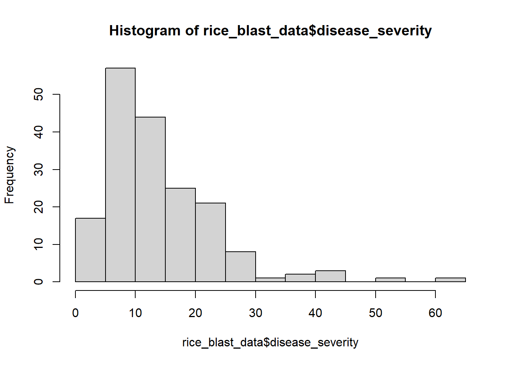
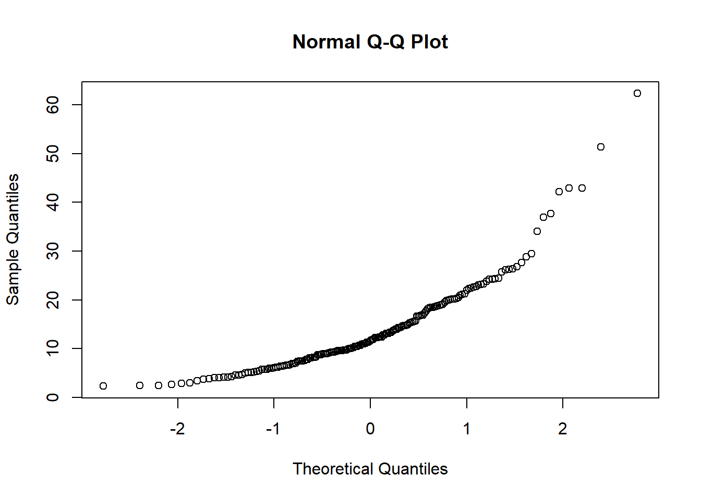
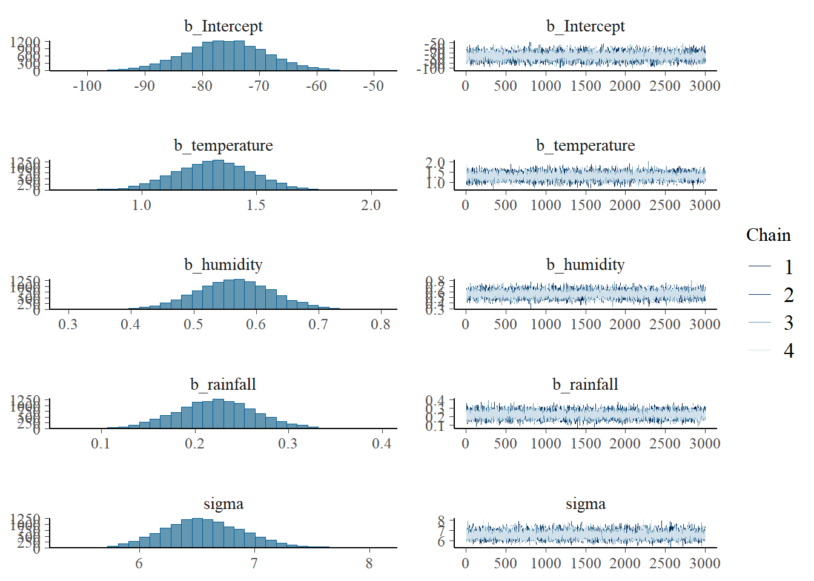
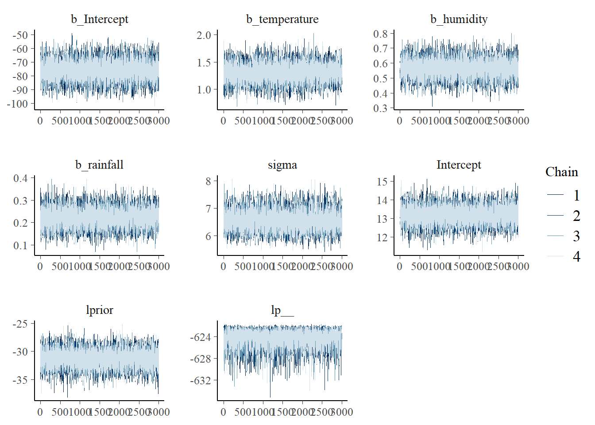
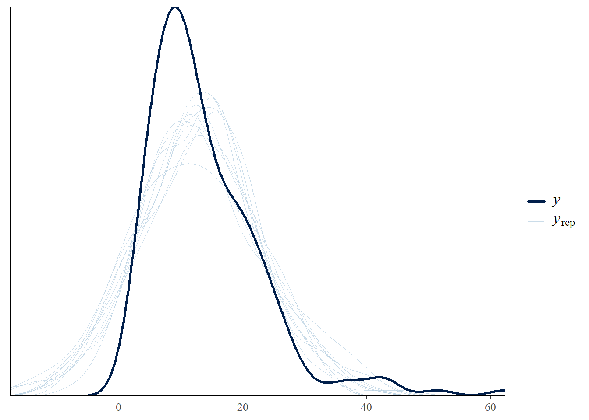
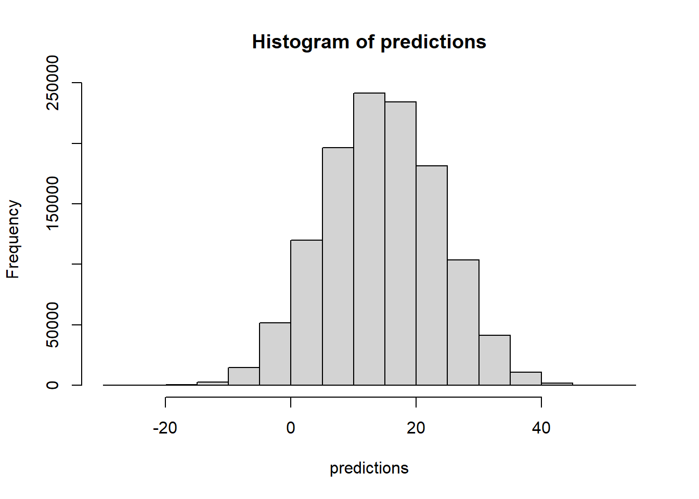

# ติดตั้งแพ็กเกจที่จำเป็น
# install.packages(c("brms", "rstanarm", "tidyverse", "bayesplot"))
# โหลดแพ็กเกจ
library(brms)
library(rstanarm)
library(tidyverse)
library(bayesplot)Implementing Bayesian Models in R for Plant Disease Epidemiology with R
R
1. บทนำ
การวิเคราะห์ข้อมูลทางระบาดวิทยาโรคพืชในปัจจุบันต้องเผชิญกับความท้าทายหลายประการ ทั้งความไม่แน่นอนของการระบาด ความซับซ้อนของปัจจัยที่เกี่ยวข้อง และข้อจำกัดของขนาดตัวอย่าง การวิเคราะห์แบบ Bayesian จึงเป็นทางเลือกที่น่าสนใจ เนื่องจากมีข้อได้เปรียบหลายประการเมื่อเทียบกับวิธี Frequentist ดั้งเดิม:
- สามารถผสมผสานความรู้เดิม (Prior Knowledge) จากผู้เชี่ยวชาญหรือการศึกษาก่อนหน้าเข้ากับข้อมูลปัจจุบัน
- ให้การประมาณค่าความไม่แน่นอนที่สมจริงมากกว่า ผ่าน Credible Intervals
- รองรับการวิเคราะห์ข้อมูลที่มีขนาดตัวอย่างน้อยได้ดี
- เหมาะสำหรับการสร้างแบบจำลองที่ซับซ้อนและมีลำดับชั้น
ใน R มีแพ็กเกจที่ช่วยให้การวิเคราะห์แบบ Bayesian ทำได้สะดวกขึ้น โดยเฉพาะ {brms} และ {rstanarm} ซึ่งช่วยลดความซับซ้อนในการเขียนโค้ด Stan
2. การเตรียมความพร้อม
2.1 การติดตั้งและโหลดแพ็กเกจ
2.2 การเตรียมข้อมูล
การเตรียมข้อมูลที่ดีเป็นพื้นฐานสำคัญของการวิเคราะห์ ควรทำตามขั้นตอนต่อไปนี้:
# สร้างข้อมูลจำลองสำหรับการระบาดของโรคไหม้ในข้าว
set.seed(123) # กำหนดเพื่อให้ผลลัพธ์คงที่
# กำหนดจำนวนตัวอย่าง
n <- 200
# สร้างตัวแปรสภาพแวดล้อม
temperature <- rnorm(n, mean = 28, sd = 3) # อุณหภูมิ (°C)
humidity <- rnorm(n, mean = 85, sd = 8) # ความชื้นสัมพัทธ์ (%)
rainfall <- rgamma(n, shape = 2, scale = 10) # ปริมาณน้ำฝน (มม./วัน)
wind_speed <- rnorm(n, mean = 5, sd = 2) # ความเร็วลม (กม./ชม.)
# สร้างตัวแปรการจัดการ
variety <- sample(c("สุพรรณบุรี 1", "ปทุมธานี 1", "กข49", "กข61"), n, replace = TRUE)
planting_density <- rnorm(n, mean = 25, sd = 3) # ระยะปลูก (ซม.)
nitrogen_rate <- rnorm(n, mean = 100, sd = 20) # อัตราปุ๋ยไนโตรเจน (กก./ไร่)
# สร้างความสัมพันธ์ที่ซับซ้อนสำหรับความรุนแรงของโรค
# โดยคำนึงถึงปัจจัยหลักที่มีผลต่อการระบาด
logit_severity <- -2 +
0.3 * scale(temperature) +
0.4 * scale(humidity) +
0.2 * scale(rainfall) +
0.1 * scale(wind_speed) +
rnorm(n, 0, 0.5) # ความแปรปรวนที่ไม่สามารถอธิบายได้
# แปลงเป็นเปอร์เซ็นต์ความรุนแรงของโรค
disease_severity <- plogis(logit_severity) * 100
# สร้าง data frame
rice_blast_data <- data.frame(
date = seq(as.Date("2024-01-01"), by = "day", length.out = n),
plot_id = 1:n,
temperature = temperature,
humidity = humidity,
rainfall = rainfall,
wind_speed = wind_speed,
variety = variety,
planting_density = planting_density,
nitrogen_rate = nitrogen_rate,
disease_severity = disease_severity
)
# เพิ่ม missing values เพื่อให้เหมือนข้อมูลจริง
set.seed(456)
missing_indices <- sample(1:n, size = n * 0.1) # 10% missing values
rice_blast_data$disease_severity[missing_indices] <- NA
# เพิ่มคอลัมน์สำหรับระยะการเจริญเติบโต
rice_blast_data$growth_stage <- cut(
as.numeric(rice_blast_data$date - min(rice_blast_data$date)),
breaks = c(-Inf, 30, 60, 90, Inf),
labels = c("Vegetative", "Tillering", "Booting", "Heading")
)
# แสดงตัวอย่างข้อมูล
head(rice_blast_data)| date | plot_id | temperature | humidity | rainfall | wind_speed | variety | planting_density | nitrogen_rate | disease_severity | growth_stage |
|---|---|---|---|---|---|---|---|---|---|---|
| 2024-01-01 | 1 | 26.31857 | 102.59048 | 14.112653 | 5.081870 | กข49 | 26.97498 | 116.69064 | 29.502238 | Vegetative |
| 2024-01-02 | 2 | 27.30947 | 95.49930 | 1.500635 | 5.573071 | สุพรรณบุรี 1 | 22.19361 | 86.14552 | 12.415558 | Vegetative |
| 2024-01-03 | 3 | 32.67612 | 82.87884 | 14.648844 | 4.991773 | ปทุมธานี 1 | 27.14270 | 68.56425 | 19.836898 | Vegetative |
| 2024-01-04 | 4 | 28.21153 | 89.34555 | 20.777725 | 6.373626 | กข49 | 28.96207 | 119.35015 | 19.581910 | Vegetative |
| 2024-01-05 | 5 | 28.38786 | 81.68528 | 21.901982 | 4.710641 | ปทุมธานี 1 | 22.47249 | 68.11050 | 8.171854 | Vegetative |
| 2024-01-06 | 6 | 33.14520 | 81.19002 | 33.222297 | 3.775844 | สุพรรณบุรี 1 | 24.84162 | 104.04905 | 13.119328 | Vegetative |
# สรุปข้อมูลเบื้องต้น
summary(rice_blast_data) date plot_id temperature humidity
Min. :2024-01-01 Min. : 1.00 Min. :21.07 Min. : 65.27
1st Qu.:2024-02-19 1st Qu.: 50.75 1st Qu.:26.12 1st Qu.: 80.27
Median :2024-04-09 Median :100.50 Median :27.82 Median : 85.18
Mean :2024-04-09 Mean :100.50 Mean :27.97 Mean : 85.34
3rd Qu.:2024-05-29 3rd Qu.:150.25 3rd Qu.:29.71 3rd Qu.: 90.72
Max. :2024-07-18 Max. :200.00 Max. :37.72 Max. :105.57
rainfall wind_speed variety planting_density
Min. : 1.501 Min. :-0.2077 Length:200 Min. :17.27
1st Qu.:10.724 1st Qu.: 3.7564 Class :character 1st Qu.:22.76
Median :17.027 Median : 4.9846 Mode :character Median :24.96
Mean :18.861 Mean : 4.9995 Mean :24.96
3rd Qu.:25.526 3rd Qu.: 6.4826 3rd Qu.:27.14
Max. :69.841 Max. :11.6087 Max. :33.10
nitrogen_rate disease_severity growth_stage
Min. : 52.97 Min. : 2.305 Vegetative: 31
1st Qu.: 86.61 1st Qu.: 7.691 Tillering : 30
Median : 99.07 Median :11.653 Booting : 30
Mean :100.23 Mean :13.994 Heading :109
3rd Qu.:115.08 3rd Qu.:18.573
Max. :153.33 Max. :62.341
NA's :20 # ตรวจสอบความสัมพันธ์ระหว่างตัวแปร
cor(rice_blast_data[, c("temperature", "humidity", "rainfall",
"wind_speed", "disease_severity")],
use = "complete.obs") temperature humidity rainfall wind_speed
temperature 1.00000000 -0.01555054 0.12355449 0.03511394
humidity -0.01555054 1.00000000 0.05300847 -0.01096358
rainfall 0.12355449 0.05300847 1.00000000 0.04084439
wind_speed 0.03511394 -0.01096358 0.04084439 1.00000000
disease_severity 0.44343645 0.48504365 0.35534763 0.21109177
disease_severity
temperature 0.4434365
humidity 0.4850437
rainfall 0.3553476
wind_speed 0.2110918
disease_severity 1.0000000

3. การสร้างโมเดล Bayesian
3.1 การกำหนด Prior
การเลือก prior ที่เหมาะสมเป็นขั้นตอนสำคัญในการวิเคราะห์แบบ Bayesian:
# กำหนด prior สำหรับ regression coefficients
priors <- c(
prior(normal(0, 2), class = "Intercept"),
prior(normal(0, 1), class = "b"),
prior(student_t(3, 0, 2), class = "sigma")
)
# สร้างโมเดลพื้นฐาน
model_disease <- brm(
disease_severity ~ temperature + humidity + rainfall,
data = rice_blast_data,
family = gaussian(),
prior = priors,
chains = 4,
iter = 4000,
warmup = 1000
)
SAMPLING FOR MODEL 'anon_model' NOW (CHAIN 1).
Chain 1:
Chain 1: Gradient evaluation took 5.3e-05 seconds
Chain 1: 1000 transitions using 10 leapfrog steps per transition would take 0.53 seconds.
Chain 1: Adjust your expectations accordingly!
Chain 1:
Chain 1:
Chain 1: Iteration: 1 / 4000 [ 0%] (Warmup)
Chain 1: Iteration: 400 / 4000 [ 10%] (Warmup)
Chain 1: Iteration: 800 / 4000 [ 20%] (Warmup)
Chain 1: Iteration: 1001 / 4000 [ 25%] (Sampling)
Chain 1: Iteration: 1400 / 4000 [ 35%] (Sampling)
Chain 1: Iteration: 1800 / 4000 [ 45%] (Sampling)
Chain 1: Iteration: 2200 / 4000 [ 55%] (Sampling)
Chain 1: Iteration: 2600 / 4000 [ 65%] (Sampling)
Chain 1: Iteration: 3000 / 4000 [ 75%] (Sampling)
Chain 1: Iteration: 3400 / 4000 [ 85%] (Sampling)
Chain 1: Iteration: 3800 / 4000 [ 95%] (Sampling)
Chain 1: Iteration: 4000 / 4000 [100%] (Sampling)
Chain 1:
Chain 1: Elapsed Time: 0.046 seconds (Warm-up)
Chain 1: 0.112 seconds (Sampling)
Chain 1: 0.158 seconds (Total)
Chain 1:
SAMPLING FOR MODEL 'anon_model' NOW (CHAIN 2).
Chain 2:
Chain 2: Gradient evaluation took 1.3e-05 seconds
Chain 2: 1000 transitions using 10 leapfrog steps per transition would take 0.13 seconds.
Chain 2: Adjust your expectations accordingly!
Chain 2:
Chain 2:
Chain 2: Iteration: 1 / 4000 [ 0%] (Warmup)
Chain 2: Iteration: 400 / 4000 [ 10%] (Warmup)
Chain 2: Iteration: 800 / 4000 [ 20%] (Warmup)
Chain 2: Iteration: 1001 / 4000 [ 25%] (Sampling)
Chain 2: Iteration: 1400 / 4000 [ 35%] (Sampling)
Chain 2: Iteration: 1800 / 4000 [ 45%] (Sampling)
Chain 2: Iteration: 2200 / 4000 [ 55%] (Sampling)
Chain 2: Iteration: 2600 / 4000 [ 65%] (Sampling)
Chain 2: Iteration: 3000 / 4000 [ 75%] (Sampling)
Chain 2: Iteration: 3400 / 4000 [ 85%] (Sampling)
Chain 2: Iteration: 3800 / 4000 [ 95%] (Sampling)
Chain 2: Iteration: 4000 / 4000 [100%] (Sampling)
Chain 2:
Chain 2: Elapsed Time: 0.041 seconds (Warm-up)
Chain 2: 0.116 seconds (Sampling)
Chain 2: 0.157 seconds (Total)
Chain 2:
SAMPLING FOR MODEL 'anon_model' NOW (CHAIN 3).
Chain 3:
Chain 3: Gradient evaluation took 1.5e-05 seconds
Chain 3: 1000 transitions using 10 leapfrog steps per transition would take 0.15 seconds.
Chain 3: Adjust your expectations accordingly!
Chain 3:
Chain 3:
Chain 3: Iteration: 1 / 4000 [ 0%] (Warmup)
Chain 3: Iteration: 400 / 4000 [ 10%] (Warmup)
Chain 3: Iteration: 800 / 4000 [ 20%] (Warmup)
Chain 3: Iteration: 1001 / 4000 [ 25%] (Sampling)
Chain 3: Iteration: 1400 / 4000 [ 35%] (Sampling)
Chain 3: Iteration: 1800 / 4000 [ 45%] (Sampling)
Chain 3: Iteration: 2200 / 4000 [ 55%] (Sampling)
Chain 3: Iteration: 2600 / 4000 [ 65%] (Sampling)
Chain 3: Iteration: 3000 / 4000 [ 75%] (Sampling)
Chain 3: Iteration: 3400 / 4000 [ 85%] (Sampling)
Chain 3: Iteration: 3800 / 4000 [ 95%] (Sampling)
Chain 3: Iteration: 4000 / 4000 [100%] (Sampling)
Chain 3:
Chain 3: Elapsed Time: 0.047 seconds (Warm-up)
Chain 3: 0.107 seconds (Sampling)
Chain 3: 0.154 seconds (Total)
Chain 3:
SAMPLING FOR MODEL 'anon_model' NOW (CHAIN 4).
Chain 4:
Chain 4: Gradient evaluation took 1.1e-05 seconds
Chain 4: 1000 transitions using 10 leapfrog steps per transition would take 0.11 seconds.
Chain 4: Adjust your expectations accordingly!
Chain 4:
Chain 4:
Chain 4: Iteration: 1 / 4000 [ 0%] (Warmup)
Chain 4: Iteration: 400 / 4000 [ 10%] (Warmup)
Chain 4: Iteration: 800 / 4000 [ 20%] (Warmup)
Chain 4: Iteration: 1001 / 4000 [ 25%] (Sampling)
Chain 4: Iteration: 1400 / 4000 [ 35%] (Sampling)
Chain 4: Iteration: 1800 / 4000 [ 45%] (Sampling)
Chain 4: Iteration: 2200 / 4000 [ 55%] (Sampling)
Chain 4: Iteration: 2600 / 4000 [ 65%] (Sampling)
Chain 4: Iteration: 3000 / 4000 [ 75%] (Sampling)
Chain 4: Iteration: 3400 / 4000 [ 85%] (Sampling)
Chain 4: Iteration: 3800 / 4000 [ 95%] (Sampling)
Chain 4: Iteration: 4000 / 4000 [100%] (Sampling)
Chain 4:
Chain 4: Elapsed Time: 0.043 seconds (Warm-up)
Chain 4: 0.116 seconds (Sampling)
Chain 4: 0.159 seconds (Total)
Chain 4: 3.2 การตรวจสอบ Model Convergence
# ตรวจสอบ MCMC chains
plot(model_disease)
# Trace plots
mcmc_trace(model_disease)
4. การวิเคราะห์ผลลัพธ์
4.1 การแปลผลโมเดล
# สรุปผลโมเดล
summary(model_disease) Family: gaussian
Links: mu = identity; sigma = identity
Formula: disease_severity ~ temperature + humidity + rainfall
Data: rice_blast_data (Number of observations: 180)
Draws: 4 chains, each with iter = 4000; warmup = 1000; thin = 1;
total post-warmup draws = 12000
Regression Coefficients:
Estimate Est.Error l-95% CI u-95% CI Rhat Bulk_ESS Tail_ESS
Intercept -75.94 7.15 -90.02 -61.87 1.00 13839 9487
temperature 1.31 0.17 0.98 1.64 1.00 13972 9348
humidity 0.56 0.06 0.44 0.69 1.00 14057 9062
rainfall 0.22 0.04 0.14 0.31 1.00 13011 9232
Further Distributional Parameters:
Estimate Est.Error l-95% CI u-95% CI Rhat Bulk_ESS Tail_ESS
sigma 6.57 0.36 5.91 7.31 1.00 13482 9350
Draws were sampled using sampling(NUTS). For each parameter, Bulk_ESS
and Tail_ESS are effective sample size measures, and Rhat is the potential
scale reduction factor on split chains (at convergence, Rhat = 1).# Posterior intervals
posterior_interval(model_disease, prob = 0.95) 2.5% 97.5%
b_Intercept -90.0159398 -61.870208
b_temperature 0.9772238 1.637497
b_humidity 0.4427657 0.686660
b_rainfall 0.1396287 0.307954
sigma 5.9118005 7.309563
Intercept 12.2576677 14.122301
lprior -34.4011964 -28.266729
lp__ -628.1997676 -622.216970# Posterior predictive checks
pp_check(model_disease)
4.2 การเปรียบเทียบโมเดล
# สร้างโมเดลทางเลือก
model_alt <- brm(
disease_severity ~ temperature * humidity + rainfall,
data = rice_blast_data,
family = gaussian(),
prior = priors
)
SAMPLING FOR MODEL 'anon_model' NOW (CHAIN 1).
Chain 1:
Chain 1: Gradient evaluation took 4.4e-05 seconds
Chain 1: 1000 transitions using 10 leapfrog steps per transition would take 0.44 seconds.
Chain 1: Adjust your expectations accordingly!
Chain 1:
Chain 1:
Chain 1: Iteration: 1 / 2000 [ 0%] (Warmup)
Chain 1: Iteration: 200 / 2000 [ 10%] (Warmup)
Chain 1: Iteration: 400 / 2000 [ 20%] (Warmup)
Chain 1: Iteration: 600 / 2000 [ 30%] (Warmup)
Chain 1: Iteration: 800 / 2000 [ 40%] (Warmup)
Chain 1: Iteration: 1000 / 2000 [ 50%] (Warmup)
Chain 1: Iteration: 1001 / 2000 [ 50%] (Sampling)
Chain 1: Iteration: 1200 / 2000 [ 60%] (Sampling)
Chain 1: Iteration: 1400 / 2000 [ 70%] (Sampling)
Chain 1: Iteration: 1600 / 2000 [ 80%] (Sampling)
Chain 1: Iteration: 1800 / 2000 [ 90%] (Sampling)
Chain 1: Iteration: 2000 / 2000 [100%] (Sampling)
Chain 1:
Chain 1: Elapsed Time: 0.261 seconds (Warm-up)
Chain 1: 0.141 seconds (Sampling)
Chain 1: 0.402 seconds (Total)
Chain 1:
SAMPLING FOR MODEL 'anon_model' NOW (CHAIN 2).
Chain 2:
Chain 2: Gradient evaluation took 3.6e-05 seconds
Chain 2: 1000 transitions using 10 leapfrog steps per transition would take 0.36 seconds.
Chain 2: Adjust your expectations accordingly!
Chain 2:
Chain 2:
Chain 2: Iteration: 1 / 2000 [ 0%] (Warmup)
Chain 2: Iteration: 200 / 2000 [ 10%] (Warmup)
Chain 2: Iteration: 400 / 2000 [ 20%] (Warmup)
Chain 2: Iteration: 600 / 2000 [ 30%] (Warmup)
Chain 2: Iteration: 800 / 2000 [ 40%] (Warmup)
Chain 2: Iteration: 1000 / 2000 [ 50%] (Warmup)
Chain 2: Iteration: 1001 / 2000 [ 50%] (Sampling)
Chain 2: Iteration: 1200 / 2000 [ 60%] (Sampling)
Chain 2: Iteration: 1400 / 2000 [ 70%] (Sampling)
Chain 2: Iteration: 1600 / 2000 [ 80%] (Sampling)
Chain 2: Iteration: 1800 / 2000 [ 90%] (Sampling)
Chain 2: Iteration: 2000 / 2000 [100%] (Sampling)
Chain 2:
Chain 2: Elapsed Time: 0.251 seconds (Warm-up)
Chain 2: 0.139 seconds (Sampling)
Chain 2: 0.39 seconds (Total)
Chain 2:
SAMPLING FOR MODEL 'anon_model' NOW (CHAIN 3).
Chain 3:
Chain 3: Gradient evaluation took 9e-06 seconds
Chain 3: 1000 transitions using 10 leapfrog steps per transition would take 0.09 seconds.
Chain 3: Adjust your expectations accordingly!
Chain 3:
Chain 3:
Chain 3: Iteration: 1 / 2000 [ 0%] (Warmup)
Chain 3: Iteration: 200 / 2000 [ 10%] (Warmup)
Chain 3: Iteration: 400 / 2000 [ 20%] (Warmup)
Chain 3: Iteration: 600 / 2000 [ 30%] (Warmup)
Chain 3: Iteration: 800 / 2000 [ 40%] (Warmup)
Chain 3: Iteration: 1000 / 2000 [ 50%] (Warmup)
Chain 3: Iteration: 1001 / 2000 [ 50%] (Sampling)
Chain 3: Iteration: 1200 / 2000 [ 60%] (Sampling)
Chain 3: Iteration: 1400 / 2000 [ 70%] (Sampling)
Chain 3: Iteration: 1600 / 2000 [ 80%] (Sampling)
Chain 3: Iteration: 1800 / 2000 [ 90%] (Sampling)
Chain 3: Iteration: 2000 / 2000 [100%] (Sampling)
Chain 3:
Chain 3: Elapsed Time: 0.175 seconds (Warm-up)
Chain 3: 0.145 seconds (Sampling)
Chain 3: 0.32 seconds (Total)
Chain 3:
SAMPLING FOR MODEL 'anon_model' NOW (CHAIN 4).
Chain 4:
Chain 4: Gradient evaluation took 9e-06 seconds
Chain 4: 1000 transitions using 10 leapfrog steps per transition would take 0.09 seconds.
Chain 4: Adjust your expectations accordingly!
Chain 4:
Chain 4:
Chain 4: Iteration: 1 / 2000 [ 0%] (Warmup)
Chain 4: Iteration: 200 / 2000 [ 10%] (Warmup)
Chain 4: Iteration: 400 / 2000 [ 20%] (Warmup)
Chain 4: Iteration: 600 / 2000 [ 30%] (Warmup)
Chain 4: Iteration: 800 / 2000 [ 40%] (Warmup)
Chain 4: Iteration: 1000 / 2000 [ 50%] (Warmup)
Chain 4: Iteration: 1001 / 2000 [ 50%] (Sampling)
Chain 4: Iteration: 1200 / 2000 [ 60%] (Sampling)
Chain 4: Iteration: 1400 / 2000 [ 70%] (Sampling)
Chain 4: Iteration: 1600 / 2000 [ 80%] (Sampling)
Chain 4: Iteration: 1800 / 2000 [ 90%] (Sampling)
Chain 4: Iteration: 2000 / 2000 [100%] (Sampling)
Chain 4:
Chain 4: Elapsed Time: 0.155 seconds (Warm-up)
Chain 4: 0.131 seconds (Sampling)
Chain 4: 0.286 seconds (Total)
Chain 4: # เปรียบเทียบโมเดลด้วย WAIC
waic(model_disease, model_alt)Output of model 'model_disease':
Computed from 12000 by 180 log-likelihood matrix.
Estimate SE
elpd_waic -599.3 17.5
p_waic 8.2 3.0
waic 1198.6 35.1
4 (2.2%) p_waic estimates greater than 0.4. We recommend trying loo instead.
Output of model 'model_alt':
Computed from 4000 by 180 log-likelihood matrix.
Estimate SE
elpd_waic -594.6 17.0
p_waic 8.0 2.8
waic 1189.2 34.1
4 (2.2%) p_waic estimates greater than 0.4. We recommend trying loo instead.
Model comparisons:
elpd_diff se_diff
model_alt 0.0 0.0
model_disease -4.7 1.9 5. การประยุกต์ใช้ในงานระบาดวิทยาโรคพืช
5.1 การประเมินความเสี่ยงการระบาด
# สร้างฟังก์ชันคำนวณความน่าจะเป็นของการระบาด
predict_outbreak <- function(model, new_data) {
predictions <- posterior_predict(model, newdata = new_data)
prob_outbreak <- mean(predictions > threshold)
return(prob_outbreak)
}5.2 การพยากรณ์การแพร่ระบาด
| temperature | humidity | rainfall |
|---|---|---|
| 21.07249 | 85.18263 | 17.02681 |
| 21.24068 | 85.18263 | 17.02681 |
| 21.40887 | 85.18263 | 17.02681 |
| 21.57706 | 85.18263 | 17.02681 |
| 21.74525 | 85.18263 | 17.02681 |
| 21.91343 | 85.18263 | 17.02681 |

6. ข้อควรระวังและข้อเสนอแนะ
- การเลือก prior ควรอ้างอิงจากความรู้เชิงประจักษ์หรือการศึกษาก่อนหน้า
- ตรวจสอบ convergence ของ MCMC chains อย่างละเอียด
- พิจารณาความเหมาะสมของการแจกแจงข้อมูล
- ระวังปัญหา multicollinearity ระหว่างตัวแปรทำนาย
7. สรุป
การวิเคราะห์แบบ Bayesian ใน R เป็นเครื่องมือที่มีประสิทธิภาพสำหรับงานระบาดวิทยาโรคพืช โดยเฉพาะในสถานการณ์ที่มีความไม่แน่นอนสูงหรือข้อมูลจำกัด การเลือกใช้แพ็กเกจที่เหมาะสมและการระมัดระวังในขั้นตอนต่างๆ จะช่วยให้ได้ผลการวิเคราะห์ที่น่าเชื่อถือและนำไปใช้ประโยชน์ได้จริง
เอกสารอ้างอิง
- Bürkner, P. C. (2017). brms: An R package for Bayesian multilevel models using Stan. Journal of Statistical Software, 80(1), 1-28.
- Gelman, A., et al. (2013). Bayesian Data Analysis, Third Edition. CRC Press.
- McElreath, R. (2020). Statistical Rethinking: A Bayesian Course with Examples in R and Stan. CRC Press.